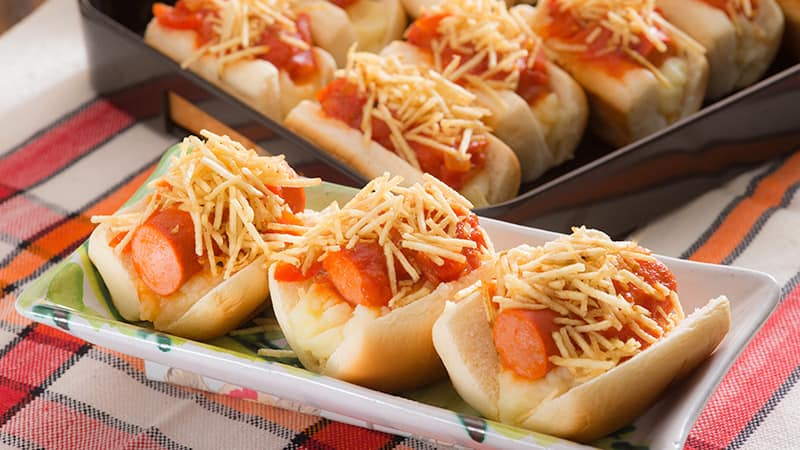

Cachorro Quente

Descrição
Dica super prática, fácil de fazer e que rende bastante. Seu arraiá precisa desse clássico!
Ingredientes
- 4 colheres de sopa de azeite
- 1 cebola cortada em cubos
- 1/2 pimentão verde cortado em cubos
- 8 salsichas aferventadas cortada em rodelas
- 1 lata de tomate pelado em cubos
- sal, orégano e pimenta-do-reino a gosto
- mini pães para cachorro quente
- maionese, ketchup e mostarda a gosto
- batata palha
Modo de preparo
- Em uma panela, aqueça o azeite em fogo médio e refogue a cebola por 5 minutos;
- Junte o pimentão e refogue por 4 minutos;
- Junte as salsichas e o tomate pelado;
- Tempere com sal, orégano e pimenta;
- Deixe cozinhar por 5 minutos e, em seguida, reserve;
- Abra o pão ao meio, espalhe a maionese, coloque salsicha e molho;
- Sobre a salsicha, coloque o ketchup e a mostarda;
- Polvilhe batata palha.
Voltar para a Página Inicial